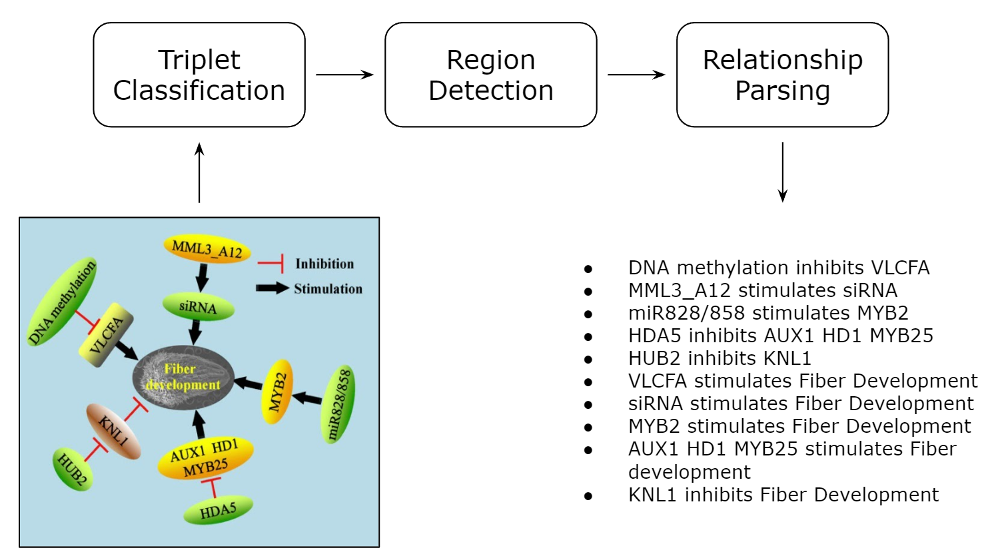
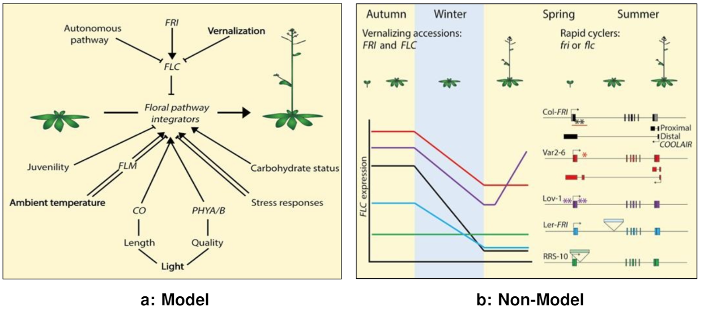
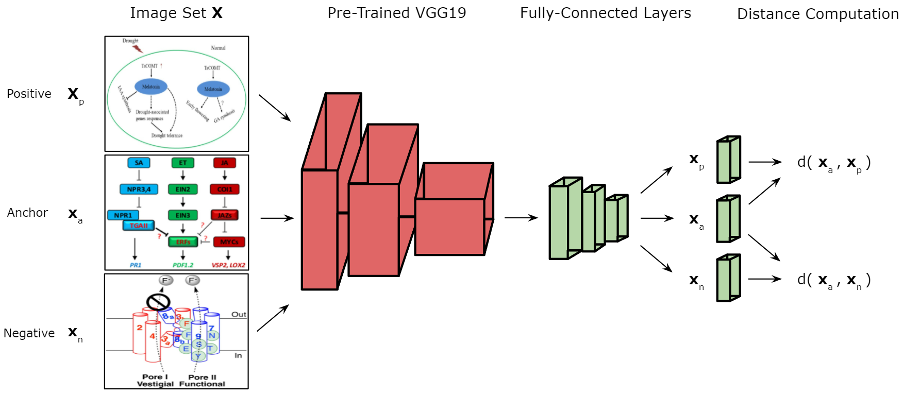

Applications of computer vision on natural images have seen great success recently, yet we have seen few approaches dealing with visual illustrations. We propose a collection of computer vision applications for parsing genetic models. Genetic models are a type of visual illustration often used in the biological sciences literature. These are used to demonstrate how a discovery fits into what is already known about a biological system. A system that determines the interactions present in a genetic model can be valuable to researchers studying such interactions. The proposed system contains three parts. First, a triplet network is deployed to decide whether or not a figure is a genetic model. Second, a popular object detection network YOLOv5 is trained to locate regions of interest within genetic models using various deep learning training techniques. Lastly, we propose an algorithm that can infer the relationships between the pairs of genes or textual features present in the genetic model. Components of this system power the search functionality of the Bio-Analytic Resource for Plant Biology tool at the University of Toronto.
Our proposed method is shown below for constructing textual descriptions from a genetic model. It consists of three steps. First, a Triplet classification network is trained on our synthetic dataset named GeneNetSyn, which classifies whether or not an image is a genetic model. Next, a YOLOv5 model identifies the constituents blocks within genetic models. These blocks consist of genes (geometric shapes enclosing textual elementsof gene or protein names) and activation and inhibition lines between these nodes. It is relatively easy to manually create a set of labeled datasets needed to train the classification network in the first step. This dataset simply requires images of genetic models andother publication figures paired with a binary label indicating whether or not an image is a genetic model. Our region detection YOLOv5 model in the second step, however, requires richly annotated datasets, which are burdensome to acquire. Instead, the YOLOv5 model, which was initially trained on natural image datasets, is fine-tuned using synthetic datasets. Furthermore, we employ learning techniques, such as domain adaptation and transfer learning. Before the third step, the system leverages Google OCR API to extract textual elements from the genetic models. These extracted textual elements, often being genes and proteins, are presented in aconvenient scheme to index the genetic model within the University of Toronto’s BAR. Lastly, the thesis develops an activation/inhibition line analysis system to extract a textual description of the form, “Gene A inhibits Gene B.”

We introduce both the real and synthetic genetic model datasets titled GeneNet and GeneNetSyn, respectively. Training a deep neural network is a data-dependent task, thus we require large collections of data which is supplemented by richly annotated ground truth.
GeneNet
Currently, there are no publicly available publication figure datasets in the scope of plant biology. To train a computer vision system for diagram parsing, we require a richly annotated dataset of both publication figures and genetic models. We present the collection of GeneNet datasets that offer ground truth for genetic model classification, region detection, and diagram parsing. GeneNet introduces a new avenue for creating computer vision applications for genetic models analysis.

GeneNetSyn
We propose a collection of datasets that iteratively increase in visual complexity. The goal of these synthetic datasets is to attempt to mimic the interaction of genes through relationships present in genetic models from publication figures present in GeneNet.


Genetic Model Classification
We introduce our approach to determining whether a given publication figure is a genetic model or not. A Triplet classification network is leveraged to complete this task. A Triplet network requires three input images to decide whether the image of interest (anchor) is more similar to the positive or negative class from the dataset X. For each data item passed to the network, the datais divided into three sub-batches: the image of interest (anchor) xa, the positive class example xp, and the negative class example xn.

Region Detection
We employ two learning techniques to transfer the weights from Microsoft COCO to our synthetic genetic models within GeneNetSyn. Firstly, we use instance-based mapping transfer learning to tune the weights from the source domain to our target domain. Secondly, to also improve the transition of natural image trained weights to genetic models, we introduce domain adaptation to our region detection networks training approach. Although our region detection networks are being trained on GeneNetSyn, we add real genetic models from the GeneNet datasets to make the transition from synthetic to real genetic models have less impact on performance. A visualization of the YOLOv5 training approach can be seen below.

Parsing Relationships
We introduce our approach to parsing entities associated with a relationship. We leverage the use of an active contour model. Furthermore, this approach does not use any machine learning inference or prediction. The goal of our task is to generate sets of triplets representing entity-relationship-entities found within a given diagram. The following methodology offers a solution for both GeneNet and GeneNetSyn diagrams. One minor difference between the implementationsof the two datasets is how the text within textual features is collected. For the GeneNetSyn datasets, we assume that text to bounding box association are known. When considering diagrams from GeneNet or other genetic models not known, we would have textual information located using optical character recognition. We can divide our approach into three steps which we will specifically identify and describe: initialization; relationship pairing; and entity-relationship-entity.